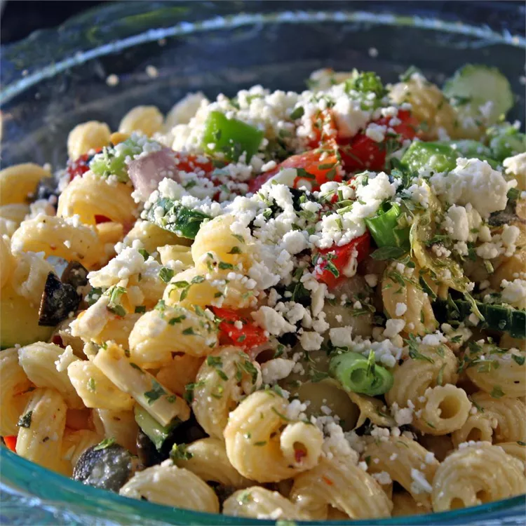

Greek Pasta Salad
Home

This Greek pasta salad recipe makes a great summer salad.
Approximate cooking time: 3 hrs
Ingredients:
- 2 cups penne pasta
- ⅔ cup extra-virgin olive oil
- ¼ cup red wine vinegar
- 2 cloves garlic, crushed
- 1 tablespoon lemon juice
- 2 teaspoons dried oregano
- salt and pepper to taste
- 10 cherry tomatoes, halved
- 1 green bell pepper, chopped
- 1 red bell pepper, chopped
- 1 small red onion, chopped
- ½ cucumber, sliced
- ½ cup sliced black olives
- ½ cup crumbled feta cheese
Steps:
-
Fill a large pot with lightly salted water and bring to a rolling boil. Stir in penne and return to a
boil. Cook pasta uncovered, stirring occasionally, until tender yet firm to the bite, about 10 minutes;
rinse with cold water and drain well.
-
Whisk olive oil, vinegar, garlic, lemon juice, oregano, salt, and pepper together in a bowl; set aside.
-
Combine pasta, tomatoes, green and red peppers, onion, cucumber, olives, and feta cheese in a large
bowl. Pour vinaigrette over the pasta mixture and mix well. Cover and chill for 3 hours before serving.
Back